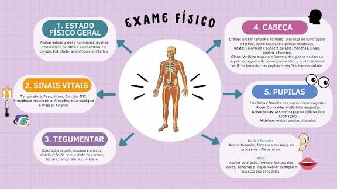
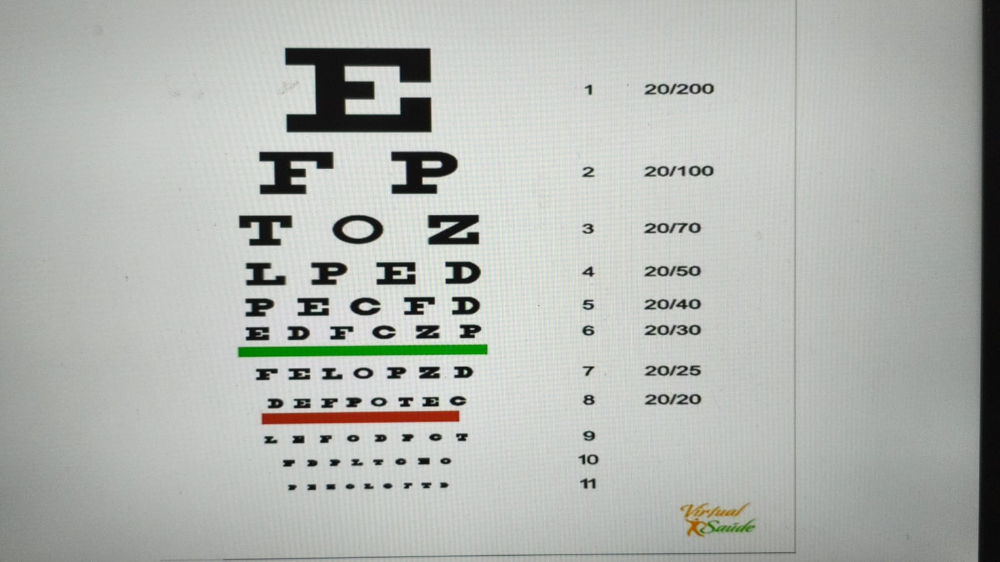
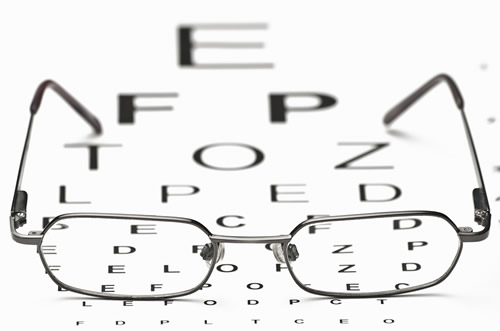
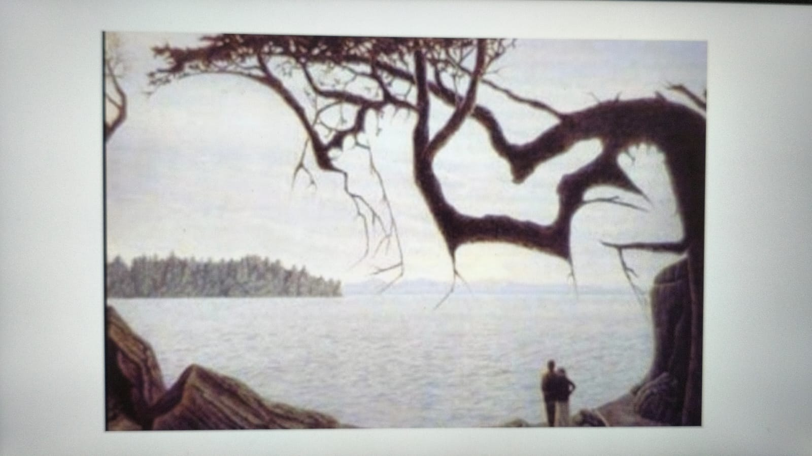
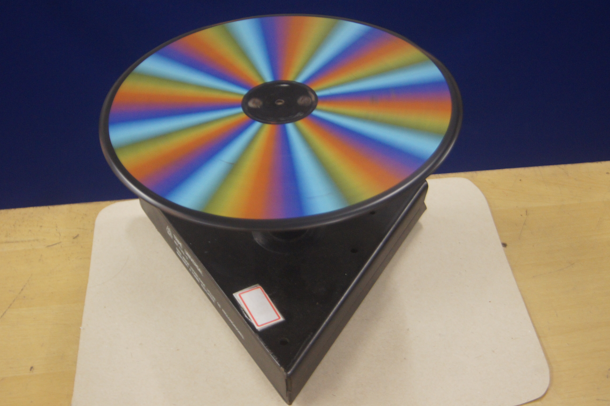
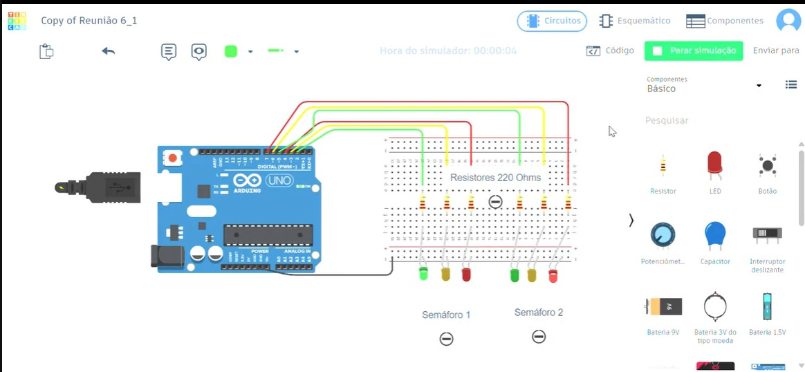

1. Anamnese Visual
Mapeamento dos hábitos visuais dos estudantes, uso de telas e histórico de consultas oftalmológicas.
Nota: Atividade educativa sem caráter de diagnóstico médico.
Ivaiporã - PR | Projeto Integrador
Uma investigação interdisciplinar sobre visão, luz e percepção humana.
O projeto “Olhos que Veem, Física que Explica” propõe uma investigação interdisciplinar sobre a relação entre a Física, o funcionamento da visão e a percepção humana. O componente curricular de Robótica está voltado para a construção de protótipos e robôs com sensores ópticos, simulação de íris mecânicas e desenvolvimento de tecnologias assistivas que replicam a visão humana e o componente curricular de Programação elaborar o site unindo todos os componentes para que a partir de situações presentes no cotidiano dos estudantes, eles possam utilizar conceitos de óptica, como propagação e refração da luz, formação de imagens, acuidade visual, percepção das cores e ilusões de óptica.
Dica: Clique ou pressione Enter nas imagens para rotacioná-las!

Mapeamento dos hábitos visuais dos estudantes, uso de telas e histórico de consultas oftalmológicas.
Nota: Atividade educativa sem caráter de diagnóstico médico.
Estudo do tamanho angular e distância. Descubra o significado do padrão 20/20!
Curiosidade: Visão 20/20 indica que você enxerga a 20 pés (aprox. 6 metros) o que uma pessoa com visão padrão deveria enxergar a essa distância.

Experimentos práticos com lápis na água, prismas e desvio da luz.
Curiosidade: A ilusão do lápis "quebrado" no copo d'água ocorre porque a luz muda de velocidade ao passar do ar para a água!

Análise de figuras ambíguas e imagens em movimento. Por que o cérebro interpreta diferente do que o olho capta?

Experimentos com o Disco de Newton, decomposição da luz branca e filtros de cor.
Curiosidade: Um objeto vermelho não "possui" a cor vermelha em si; ele reflete a luz vermelha e absorve as demais cores da iluminação!

Simulador de Robótica - Tinkercad
Curiosidade: Simulador que agiliza a prototipagem do produto final!
Tente dizer a COR DAS LETRAS em voz alta (e não o texto escrito) o mais rápido que puder:
O cérebro tende a ler a palavra antes de identificar a cor do texto, gerando uma competição cognitiva!